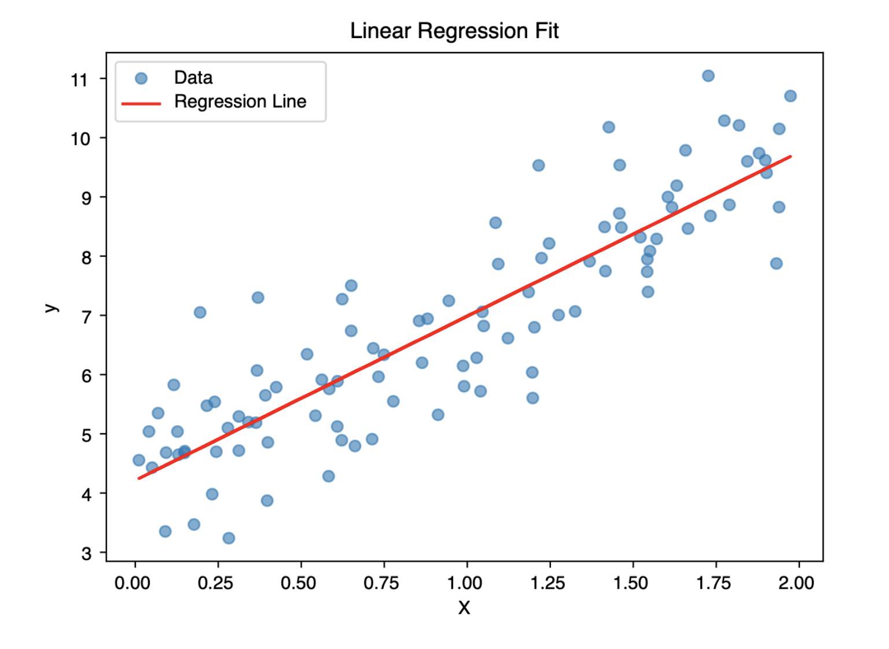

Interactive Linear Regression Lab with Python


This interactive lab demonstrates a simple linear regression using scikit-learn.
You can click on the code blocks and run them interactively in your browser!
{Source: Google Gemini, height=500px, width= 1000px }
What is Linear Regression?
Linear regression is a statistical method used to model the relationship between a dependent variable and one or more independent variables. It aims to fit a linear equation to observed data, enabling predictions and understanding of the underlying relationships.
Why Learn Linear Regression?
- Interpretability: Coefficients provide insights into the influence of each predictor.
- Foundation: Serves as a stepping stone to more complex models.
- Applicability: Widely used in various fields like economics, biology, and engineering.
The simplest form (simple linear regression) fits a line:
y=β0+β1x+ε
where:
- y: Dependent variable
- x: Independent variable
- β0 is the intercept
- β1 is the slope coefficient
- ε is the error term
Objective:
Estimate 𝛽0 and 𝛽1 such that the sum of squared residuals (differences between observed and predicted values) is minimized.
Where is Linear Regression Applied?
- Predicting housing prices based on features like size and location.
- Estimating sales based on advertising spend.
- Assessing the impact of education level on income.
Implementing Linear Regression in Python
Import libraries and generate a synthetic data
Fit Linear Regression Model
model = LinearRegression() This creates an instance of the LinearRegression class from sklearn.linear_model.
At this point, the model exists but has not yet seen any data — it’s an empty shell.
model.fit(X, y) This fits the model to the data — it learns the relationship between the input (X) and output (y) by:
Calculating the best-fitting straight line that minimizes the error (specifically, the sum of squared differences between actual and predicted values).
Internally solving for the coefficients 𝛽0 (intercept) and 𝛽1 (slope) using the Ordinary Least Squares (OLS) method.
Visualize the Regression Line
The linear regression plot provides a visual interpretation of how well the model fits the data. The scattered blue dots represent the actual data points—each showing a real observation of the relationship between the independent variable (X-axis) and the dependent variable (Y-axis). The red line represents the model’s predictions, also known as the line of best fit, which summarizes the linear trend the model has learned from the data. If the red line closely follows the pattern of the dots, it indicates a strong linear relationship and a good model fit. Ideally, the data points should be distributed evenly around the red line with minimal vertical distance (residuals), suggesting that the model is accurately capturing the underlying trend.
Model validation
- R² measures the proportion of the variance in the target variable that is explained by the features. It tells you how well your model captures the variability in the data. (Range: 0-1)
- MAE gives the average magnitude of the errors in a set of predictions, without considering direction (i.e., all errors are positive).
- MSE calculates the average of the squared errors. Squaring gives more weight to large errors, making it sensitive to outliers.
- RMSE is the square root of MSE, bringing the error back to the same units as the target variable — making it more interpretable.
| Metric | Meaning | Good Value |
|---|---|---|
| R² | % of variance explained | Closer to 1 |
| MAE | Avg. absolute error | Closer to 0 |
| MSE | Avg. squared error | Closer to 0 |
| RMSE | Square root of MSE | Closer to 0 |
Make Predictions with Your Own Input
Once the model has learned the relationship between X and y, you can use it to: - Predict outcomes for new inputs - Test the model on new data (validation/test set) - Forecast future values (e.g., demand, prices)
Change the value of x_new below and rerun to predict a new output.
Conclusion
Linear regression is one of the most fundamental and widely used techniques for modeling the relationship between a dependent variable and one or more independent variables. By fitting a straight line through the data, it provides a clear and interpretable way to understand how changes in inputs affect the output. In this post, we explored how to implement linear regression in Python, interpret the fitted model visually, and evaluate its performance using key metrics like R-squared, MAE, MSE, and RMSE.
while linear regression is simple and powerful, its effectiveness depends on how well the underlying assumptions hold true, such as linearity, homoscedasticity, independence, and normality of residuals. Validating these assumptions is crucial for drawing reliable conclusions from your model.
Feel free to experiment further by changing inputs, exploring multiple features, or diving deeper into residual analysis to strengthen your grasp on this important topic.
Connect with Me
I use AI tools to assist in writing and drafting some of the content on this blog. but all content is reviewed and edited by me for accuracy and clarity.
💬 Comments